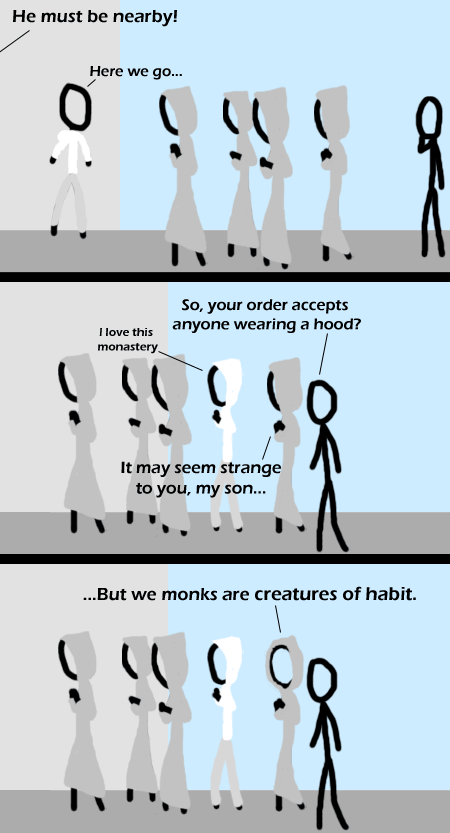

Comic JK 329
When I Feel Like It
⇤
<
?
>
⇥

⇤
<
?
>
⇥
Forum
.
RSS
.
Digg
.
Facebook
.
Reddit
.
Twitter
.
Stumbleupon
Enter your thoughts on number 329 here. Please, no spamming, trolling, rabbits or phreaking. Your mother accepts any dorky college boy wearing a hood. Backless hoods ftw. Another witty remark here. Seen this joke in wondermark, still funny here. *groan* >No, the correct response is *chuckles* >>+1 >>>I dont get the comic but +1 anyway HAHAHAHAHAHAHA Rollover text yes! >Dr Seuss for the win? !funny >!= funny, as we say in Python. I mean, seriously... Alright, I admit it! I laughed! >> I'm pretty sure you'd say !funny in python too. >>> you say 'true != funny', which is both funny and true and hence false. >>>> <>Funny, but actually it is, so just <> good (BASIC FTW!) >>>> you'd say not funny. Python is *that* human. Really funny on its own, but I'm also gonna take this as a reference to Assassin's Creed, because if the guards are looking for you in that game you can just put your hood up and hide in a group of monks. >I also think it is referencing Assassin's Creed, because of the "He must be nearby!" in the first panel. >>That was my first thought as well, just by glancing at it. Who is the other guy...will this be another series? >Can't be, it's too soon Assassin's Creed, obviously. Someone has been playing the sequel... *coke troll deleted* >>How can you obliviously know something? >>>It's obvious to those that played it.